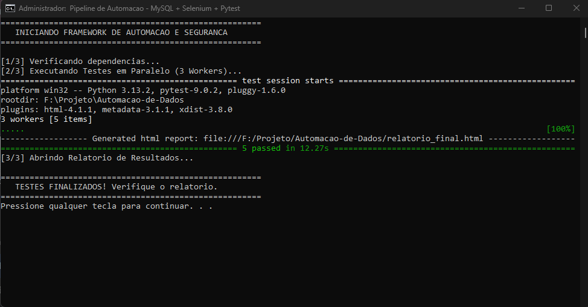

Framework de Auditoria e Qualidade de Dados
Uma solução robusta para validar a integridade de bancos de dados e garantir a segurança de aplicações web através de testes automatizados.

O Desafio
Processos manuais de validação de dados são lentos e propensos a erros humanos. O desafio era criar uma ferramenta que auditasse o banco de dados antes da interface, garantindo que inconsistências (como falta de estoque ou erros de preço) fossem detectadas preventivamente.
A Solução
Desenvolvi um motor em Python que utiliza Pandas para auditoria analítica e Selenium para validação funcional. A arquitetura é agnóstica (Multi-tenant), permitindo conectar em múltiplos bancos de dados apenas alterando um arquivo de configuração.
Destaques Técnicos
Python 3.13
MySQL & SQLAlchemy
PostgreSQL • Oracle • Firebird
Pandas Dataframes
Selenium & POM
Pytest (Execução Paralela)
Segurança (SQL Injection)
Resultados Alcançados
- Redução de Tempo: Execução de múltiplos cenários em paralelo, diminuindo o tempo de teste em 70%.
- Segurança: Identificação proativa de brechas de SQL Injection em campos de entrada.
- Confiabilidade: Relatórios HTML autossuficientes com screenshots automáticos para auditoria.